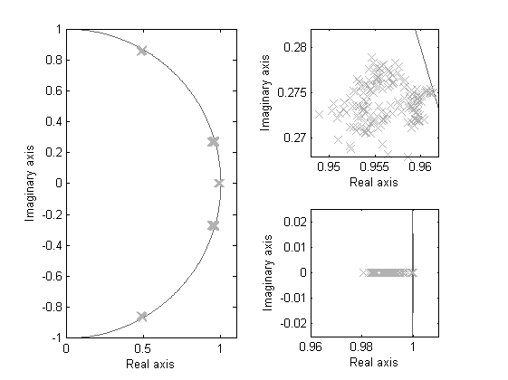
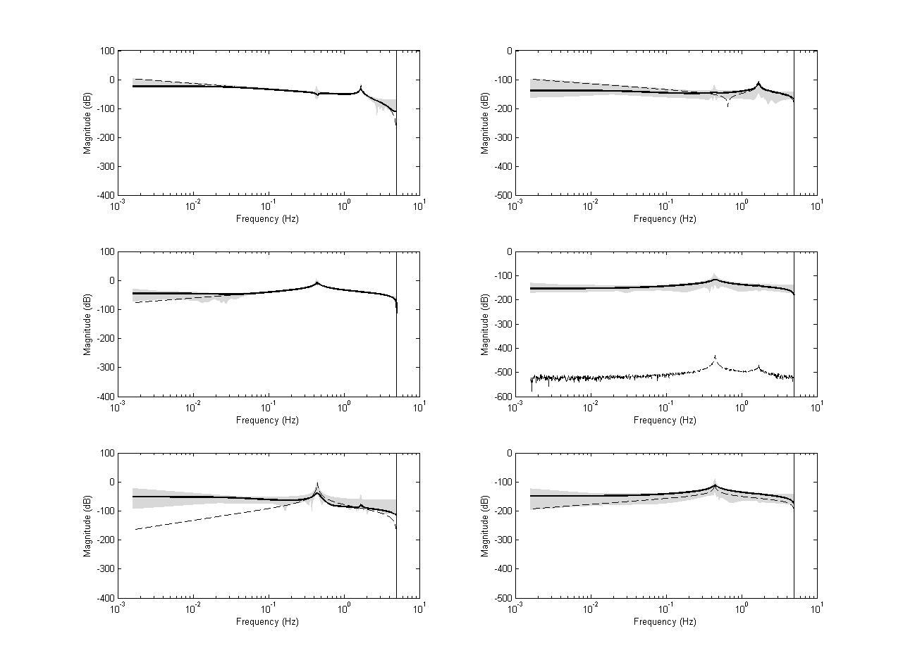

Contents
Example 8: Uncertainty bounds on estimation using Bootstrap simulations
close all; clear; clc;
LTI model of a Coleman tranformed wind turbine system
% LTI system matrices h = 0.1; % Sample time [OL,CL] = wtsLTI(h); % The wind turbine model n = size(OL.a,1); % The order of the system r = size(OL.b,2); % The number of inputs l = size(OL.c,1); % The number of outputs
Closed-loop identification experiment
Simulation of the model in closed loop
% Number of monte carlo simulations MCS = 100; % Time sequence N = 10000; % number of data points t = (0:h:h*(N-1))'; % Wind disturbance signals d = randn(N,3); % Excitation signal for pitch input r_pitch = randn(N,1); % Excitation signal for Torque input r_torque = 1e3.*randn(N,1); % Add together for simulation r = [r_pitch zeros(N,2) r_torque zeros(N,2)]; % Simulation of the closed-loop system y = lsim(CL,[d r],t); % Input and output selaction with scaling ui = detrend(y(:,7:8),'constant'); % selects input for identification (excitation of pitch + control) yi = detrend(y(:,1:3),'constant'); % selects output for identification ri = [r_pitch r_torque]; [us,Du,ys,Dy] = sigscale(ui,yi); % signal scaling Dat = iddata(ys',us',h); ys0 = ys; Dat0 = Dat; % Frequency grid w = logspace(-2,log10(pi/h),1000); % Allocate storage vectors VAF = zeros(MCS,3); EE = zeros(MCS,7); for nmcs = 1:MCS disp(['Simulation ', num2str(nmcs)]) % Defining a number of constants p = 50; % past window size f = 20; % future window size % PBSID-opt [S,x] = dordvarx(us,ys,f,p,'tikh','gcv'); x = dmodx(x,n); [Ai,Bi,Ci,Di,Ki] = dx2abcdk(x,us,ys,f,p,'stable'); EE(nmcs,:) = eig(Ai); Dat = iddata(ys',us',h); Mi = abcdk2idss(Dat,Ai,Bi,Ci,Di,Ki); % Variance-accounted-for (by Kalman filter) yest = predict(Mi,Dat0); vfm = vaf(ys0,yest.y); % bootstrapping [e,x0] = pe(Mi,Dat0); y0 = sim(Mi,[zeros(N,2) e.y]); ys = ys0 - y0'; ye = sim(Mi,zeros(N,2),'Noise'); ys = ys + ye'; % store results sys = ss(Ai,Bi/Du,Dy*Ci,Dy*Di/Du,h); if nmcs == 1 Hmin = abs(freqresp(sys,w)); Hmax = abs(freqresp(sys,w)); H0 = abs(freqresp(sys,w)); else Hmin = min(abs(Hmin),abs(freqresp(sys,w))); Hmax = max(abs(Hmax),abs(freqresp(sys,w))); end VAF(nmcs,:) = vfm'; end
Simulation 1 Forcing matrix A to be stable. Simulation 2 Simulation 3 Simulation 4 Forcing matrix A to be stable. Simulation 5 Simulation 6 Simulation 7 Simulation 8 Simulation 9 Simulation 10 Simulation 11 Simulation 12 Simulation 13 Simulation 14 Simulation 15 Simulation 16 Forcing matrix A to be stable. Simulation 17 Simulation 18 Simulation 19 Simulation 20 Simulation 21 Simulation 22 Simulation 23 Simulation 24 Simulation 25 Simulation 26 Simulation 27 Simulation 28 Simulation 29 Simulation 30 Simulation 31 Simulation 32 Simulation 33 Simulation 34 Simulation 35 Simulation 36 Simulation 37 Simulation 38 Simulation 39 Simulation 40 Simulation 41 Simulation 42 Simulation 43 Simulation 44 Simulation 45 Simulation 46 Simulation 47 Simulation 48 Simulation 49 Simulation 50 Simulation 51 Simulation 52 Simulation 53 Simulation 54 Simulation 55 Simulation 56 Simulation 57 Simulation 58 Simulation 59 Simulation 60 Simulation 61 Simulation 62 Simulation 63 Simulation 64 Simulation 65 Simulation 66 Simulation 67 Simulation 68 Simulation 69 Simulation 70 Simulation 71 Simulation 72 Simulation 73 Simulation 74 Simulation 75 Simulation 76 Simulation 77 Simulation 78 Simulation 79 Simulation 80 Simulation 81 Simulation 82 Simulation 83 Simulation 84 Simulation 85 Simulation 86 Simulation 87 Simulation 88 Simulation 89 Simulation 90 Simulation 91 Simulation 92 Simulation 93 Simulation 94 Simulation 95 Simulation 96 Simulation 97 Simulation 98 Simulation 99 Simulation 100
Identification results
% Plot eigenvalues realeig = eig(minreal(OL(1:5,[4 7]))); figure, subplot(2,2,[1 3]), deigen(EE',realeig); axis([0 1.1 -1 1]); subplot(2,2,2), deigen(EE',realeig); axis([0.948 0.962 0.268 0.282]); subplot(2,2,4), deigen(EE',realeig); axis([0.96 1.01 -0.025 0.025]); % frequency response of identified system Hr = abs(freqresp(minreal(OL(1:5,[4 7])),w)); figure('Units','normalized','Position',[0 0 1 1]), hold on dbodemagpatch(H0,Hmin,Hmax,w,h,Hr); hold off 